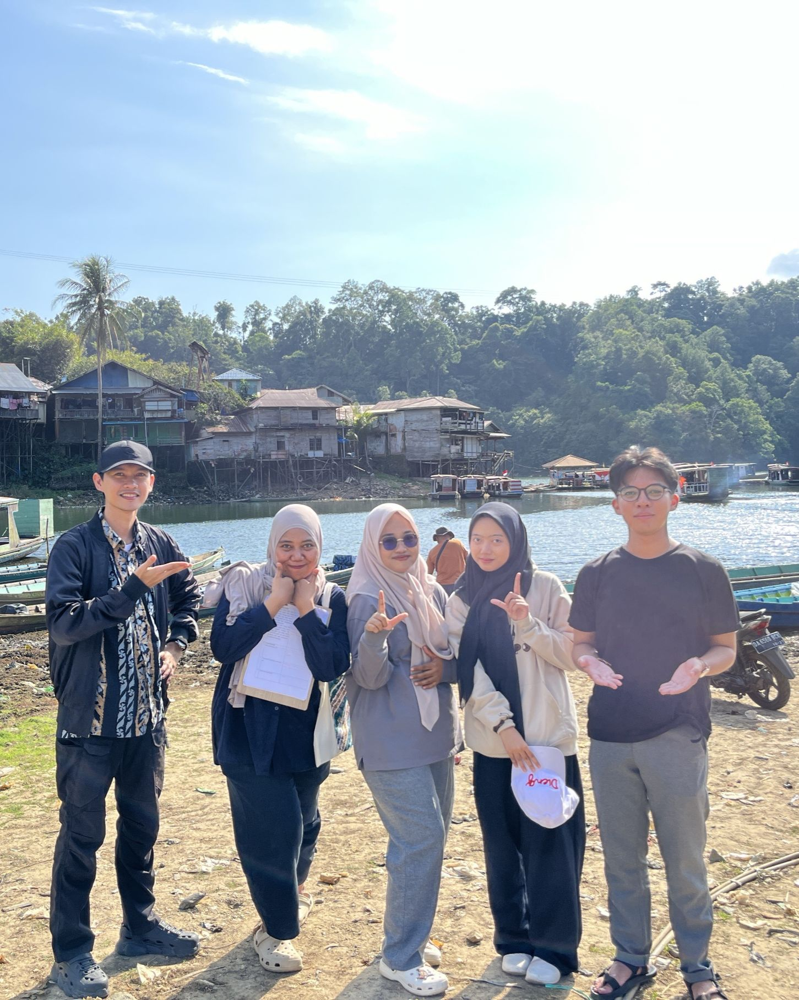

Refleksi Perkuliahan Semester 2
6 Mata Kuliah Inti Semester 2: Inovasi Pembelajaran Lahan Basah (Khas ULM), Pembelajaran Mendalam & Asesmen Lanjut (DUP-TaRL-CRT), PSE, PPL Mandiri, Projek Kepemimpinan, & Seminar PPG.

Inovasi Pembelajaran di Lahan Basah
Inovasi interdisipliner berbasis TPACK yang mengaitkan praktikum analisis data spreadsheet dan desain infografis DKV dengan studi kasus autentik fluktuasi debit air Waduk Riam Kanan Kalimantan Selatan.
- ✓Kerangka Kerja TPACK (Mishra & Koehler)
- ✓Dataset Simulasi 12 Bulan Hidrologi Waduk Riam Kanan Kalsel
- ✓Kampanye Infografis Konservasi Sungai & Mitigasi Banjir Rob
Mata kuliah muatan lokal khas Universitas Lambung Mangkurat (ULM) ini menautkan identitas keilmuan saya dengan ekosistem geografis dan sosiokultural Kalimantan Selatan. Wilayah lahan basah (wetland), yang kaya akan sunga...
Inovasi nyata yang saya terapkan dalam praktik pembelajaran di SMKN 1 Banjarmasin adalah: • Mengontekstualisasikan Dataset Praktikum: Menyusun berkas studi kasus praktikum analisis data menggunakan simulasi data fluktuas...
Pembelajaran Mendalam dan Asesmen Lanjut
Sintesis 3 kerangka inklusif (DUP/UDL, TaRL, dan CRT) dalam praktikum analisis data yang terbukti mendongkrak rata-rata nilai kelas X-B DKV dari 52,3 (Pre-Test) menjadi 83,3 (Post-Test) dengan ketuntasan 100%.
- ✓Multi-Modalitas Bahan Ajar (DUP / Universal Design for Learning)
- ✓Pengelompokan TaRL: Perintis, Cakap, dan Mahir
- ✓Lonjakan Skor Empiris +31 Poin (52,3 ke 83,3) & Analisis N-Gain
Mata kuliah ini merupakan penguatan lanjutan yang sangat krusial dalam menyempurnakan strategi pedagogik inklusif di sekolah kejuruan. Menghadapi kelas X-B DKV dan X-C DKV di SMKN 1 Banjarmasin dengan variasi kesiapan be...
Langkah transformasi nyata yang saya wujudkan di SMKN 1 Banjarmasin meliputi: • Menerapkan DUP dalam Penyediaan Bahan Ajar: Menyediakan materi dalam tiga modalitas: modul teks terstruktur bergambar, video tutorial demons...
Pembelajaran Sosial Emosional (PSE)
Integrasi 5 Kompetensi Sosial Emosional (CASEL), Mood Meter, dan jeda relaksasi Mindfulness Teknik STOP di pertengahan jam praktikum laboratorium untuk mencegah kejenuhan dan pembajakan amigdala.
- ✓5 Kompetensi Sosial Emosional (KSE CASEL)
- ✓Penerapan Jeda Mindfulness Teknik STOP (3 Menit) di Lab
- ✓Pembagian Peran Tim Proyek & Iklim School Well-Being
Mata kuliah ini menyadarkan saya bahwa keberhasilan akademik dan keterampilan teknis murid SMK dalam bidang Informatika berakar kuat pada kematangan sosial-emosional mereka. Di SMKN 1 Banjarmasin, proses belajar di depan...
Langkah perbaikan nyata yang saya implementasikan di kelas X-B DKV dan X-C DKV adalah: • Menerapkan Teknik STOP Secara Terjadwal: Memandu jeda hening dan pernapasan berkesadaran (3 menit) di pertengahan sesi praktikum sa...
Praktik Pengalaman Lapangan (PPL) Mandiri
Kemandirian penuh mengelola kelas X-B DKV dan X-C DKV, ketangkasan Reflection-in-Action saat koneksi internet terputus dengan beralih ke ad-hoc LAN, serta penulisan jurnal refleksi harian.
- ✓Autonomous Professional Teaching 100% Jam Tatap Muka
- ✓Reflection-in-Action & Reflection-on-Action (Donald Schön)
- ✓Solusi Taktis Jaringan Lokal Ad-Hoc LAN Saat Internet Putus
PPL Mandiri di SMKN 1 Banjarmasin merupakan tahap puncak pembuktian kematangan profesional saya sebagai guru Informatika seutuhnya. Berbeda dengan PPL Terbimbing yang masih didampingi intensif oleh Guru Pamong di dalam r...
Transformasi kepribadian dan keterampilan profesional yang melekat pada diri saya adalah: • Memiliki Ketahanan Mental dan Ketegasan yang Humanis: Mampu mengendalikan kelas laboratorium dengan pendekatan apresiatif tanpa ...
Projek Kepemimpinan
Kepemimpinan transformasional & Servant Leadership melalui perancangan workshop literasi digital dan keamanan siber berbasis kerangka BAGJA dan SMART Goals dengan tingkat kepuasan peserta 92%.
- ✓Servant Leadership & Agen Perubahan Ekosistem Sekolah
- ✓Kerangka Inkuiri Apresiatif BAGJA & Prinsip SMART Goals
- ✓Evaluasi Dampak: 92% Peserta Meningkat Kesadaran Keamanan Data
Mata kuliah ini memperluas horizon keprofesian saya: seorang guru tidak boleh hanya membatasi perannya di dalam dinding ruang kelas atau bilik laboratorium komputer, melainkan harus bertindak sebagai pemimpin pembelajara...
Komitmen perubahan yang saya bawa dalam karier sebagai pendidik adalah: • Aktif Menginisiasi Program Peningkatan Mutu Sekolah: Tidak pasif menunggu instruksi pimpinan, melainkan proaktif mengusulkan workshop literasi dig...
Seminar Pendidikan Profesi Guru
Ruang puncak metakognitif yang menyintesiskan seluruh artefak 12 mata kuliah dengan model refleksi 4C ke dalam E-Portofolio Digital serta perumusan Desain Karya Inovatif Informatika Learning Hub.
- ✓Sintesis Model 4C (Connection, Challenge, Concept, Change)
- ✓Kurasi Artefak Bermakna 12 Mata Kuliah PPG
- ✓Pengembangan Keprofesian Berkelanjutan (PKB) & PTK
Mata kuliah Seminar PPG merupakan ruang puncak metakognitif yang menyintesiskan seluruh rekam jejak perjalanan belajar saya selama menempuh Program PPG Calon Guru Informatika di Universitas Lambung Mangkurat. Mata kuliah...
Komitmen jangka panjang yang saya tetapkan dalam memasuki dunia pengabdian guru adalah: • Konsisten Mengembangkan Inovasi Media Digital: Terus menyempurnakan platform website Informatika Learning Hub sebagai media pembel...